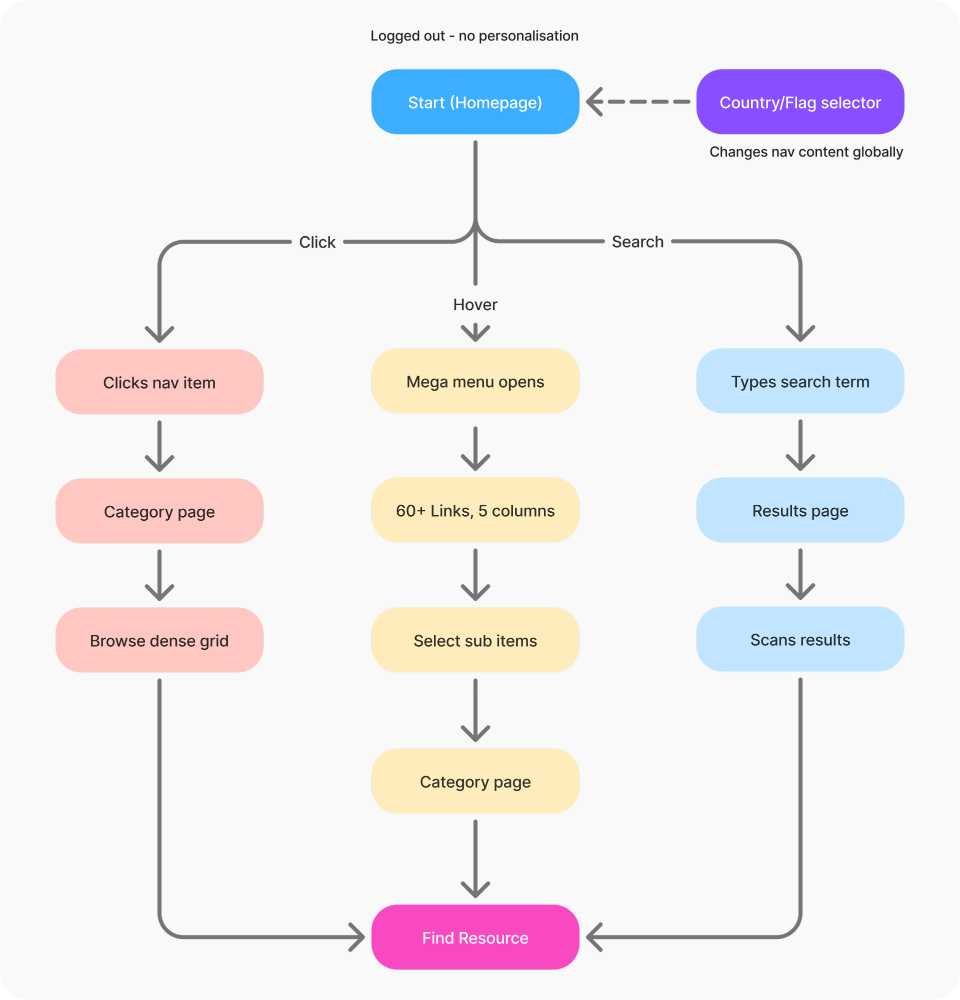
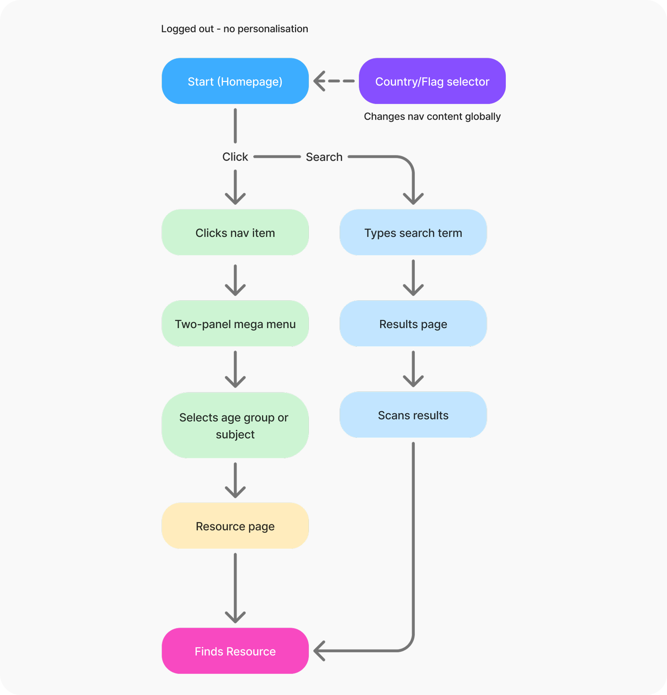

27th May 2026
User research and user flows
Scenario-based user research conducted with 3 participants to evaluate the current navigation. Key findings informed the design direction and user flows were created to map the experience.
3
Participants
All clicked the nav item directly rather than waiting for the hover-triggered mega menu to open.
47s
Mean task time
Mean time across 3 participants on an unguided navigation task. High variance (38s–56s) driven by the hover delay and menu confusion.
2/3
Participants
Commented unprompted that they expected clicking a nav item to navigate, not to trigger a dropdown.
Users bypass the mega menu entirely
All 3 participants clicked nav items directly rather than waiting for the hover-triggered mega menu. The menu was never used as intended. This points to a fundamental mismatch between the designed interaction and natural user behaviour.
The nav reflects Twinkl’s structure, not users’ mental models
2 of 3 participants expressed uncertainty about where to start. The mix of age groups, subjects, commercial items, and audience types in a single row gave users no clear entry point based on how they think about the curriculum.
The hover delay reads as a broken interaction
The 250ms reveal delay on the mega menu led all 3 participants to believe their hover had not registered. They clicked through before the menu appeared, navigating away from the nav before it had a chance to open.
Dual-function nav items cause consistent confusion
2 of 3 participants commented unprompted that they expected clicking a nav item to navigate, not open a dropdown. The same target producing two different outcomes with no visual distinction created repeated hesitation across all sessions.
Two flows were mapped to capture the current experience: an unhappy path showing where the navigation breaks down, and a happy path showing the intended journey through the redesign.
The current experience: users click nav items directly, bypass the mega menu, or fall back to search out of frustration.

The proposed redesign: clicking a nav item opens the two-panel mega menu; the user selects an age group or subject and navigates directly to a resource page.

Homepage
The entry point for logged-out visitors. Where a teacher’s first impression of Twinkl is formed and the navigation experience begins.
Country / region selection state
Twinkl operates in 190+ countries. Nav content, terminology and resources all change by region, but the current flag selector is icon-only with no label or prompt, easy to miss and poorly understood.
Mega menu
The primary intended browsing mechanism. Triggered by hover only, with a delay that causes most users to click instead, bypassing it entirely. 60+ links across 6 columns with no clear hierarchy.
Category page
Where clicking a nav item lands the user. The nav uses age ranges (Age 3–5), the page uses Key Stage terminology (KS1), and the breadcrumb uses a third variation. Three ways of describing the same thing on one page.
Sub-category page
Reached via a mega menu selection. On mobile this page is reached directly as the mega menu does not exist on smaller viewports.
Search results page
The fallback when navigation fails. Users turn to search out of frustration rather than preference. Filters use age ranges rather than Key Stages, continuing the taxonomy inconsistency.
Resource detail page
The end destination. Where Twinkl’s value is most clearly demonstrated but currently a download attempt triggers a forced sign-up gate before that value has been experienced.